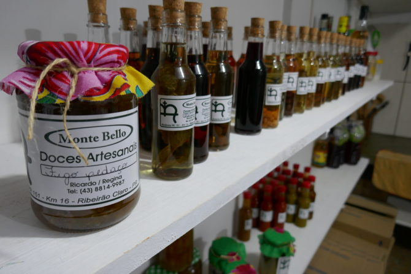
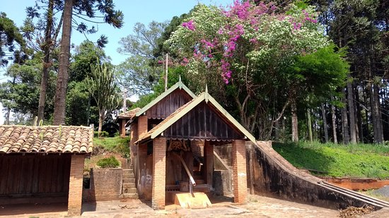

<!DOCTYPE html>
<html lang="pt-br">
</html>
<title>Fazenda Monte Bello</title>
    <meta charset="UTF-8">
    <meta http-equiv="X-UA-Compatible" content="IE=egde">
    <meta name="viewport" content="width=device-width, initial-scale=1.0 ">
    <link rel="stylesheet" href="index.css">
 </head>

<body>
    <header>
        <div class="center">
          </img>
        </div>
        <h1>Fazenda Monte Bello</h1>
      </header>
<section>
<p>
     A Fazenda Monte Bello, localizada em Ribeirão Claro, Paraná, possui uma rica história que remonta ao período de colonização da região no final do século XIX e início do século XX. Fundada em 1900, a fazenda foi uma das propriedades pioneiras na região, desempenhando um papel crucial no desenvolvimento agrícola e econômico local.

    A propriedade foi adquirida por Francisco Rodrigues da Cunha, conhecido como Chico Palma, um dos primeiros colonizadores de Ribeirão Claro. Ele foi um dos responsáveis por abrir novas fronteiras agrícolas, contribuindo significativamente para o crescimento da área. A Fazenda Monte Bello destacou-se pelo cultivo de café, que era a principal atividade econômica da época e um motor de desenvolvimento para o município.
    
    Ao longo dos anos, a Fazenda Monte Bello cresceu e se modernizou, incorporando novas técnicas agrícolas e expandindo suas atividades para além do café, incluindo a criação de gado e outras culturas. A propriedade tornou-se um exemplo de gestão agrícola eficiente e sustentável, mantendo a produtividade ao mesmo tempo em que preservava o meio ambiente.
    
    Além de sua importância econômica, a Fazenda Monte Bello também tem um valor histórico e cultural significativo para Ribeirão Claro. Ela representa a tradição e a herança dos primeiros colonizadores, refletindo a trajetória de desenvolvimento do município. A fazenda é um símbolo do espírito pioneiro e da capacidade de adaptação e inovação dos agricultores da região.
    
    Atualmente, a Fazenda Monte Bello continua a ser uma referência em agricultura na região de Ribeirão Claro. Ela atrai visitantes interessados em conhecer sua história, suas práticas agrícolas e suas belezas naturais. A fazenda mantém viva a memória de seus fundadores, celebrando a rica história de colonização e desenvolvimento de Ribeirão Claro.
</p>
</section>
</main>
<h2>Setores e Oportunidades</h2>

<p>Agricultura e Pecuária,

a Fazenda Monte Bello é conhecida por sua produção diversificada, que inclui a plantação de grãos, cultivo de frutas e criação de gado. As oportunidades de trabalho nesta área abrangem desde funções técnicas, como agrônomos e veterinários, até posições operacionais, como operadores de máquinas e trabalhadores de campo. A necessidade de manutenção de equipamentos e gestão de rebanhos também cria vagas para mecânicos e zootecnistas.

Tecnologia e Inovação,

com a modernização do setor agrícola, a Fazenda Monte Bello tem investido em tecnologia para otimizar a produção. Isso abre portas para profissionais de TI e engenheiros agrônomos especializados em tecnologias como sistemas de irrigação automatizados, sensores de monitoramento de culturas e software de gestão agrícola. A integração de tecnologias de precisão e análise de dados tem gerado novas oportunidades para técnicos e cientistas de dados.

Gestão e Administração,

a administração da Fazenda Monte Bello requer uma equipe de gestão eficiente, responsável por coordenar as operações diárias e estratégias de longo prazo. As oportunidades incluem cargos de gerência, supervisão de equipes, e funções administrativas como recursos humanos e finanças. Estes profissionais garantem a eficácia operacional e o crescimento contínuo da fazenda.

Educação e Treinamento,

a fazenda também tem investido em programas de capacitação e desenvolvimento profissional para seus colaboradores. Instrutores e facilitadores de treinamento são essenciais para garantir que os trabalhadores adquiram novas habilidades e estejam atualizados com as melhores práticas do setor. Programas de estágio e aprendizado oferecem oportunidades para jovens que desejam ingressar na área agrícola.

Sustentabilidade e Meio Ambiente

Com um crescente foco em práticas sustentáveis, a Fazenda Monte Bello busca profissionais especializados em meio ambiente e sustentabilidade. Esses profissionais trabalham para garantir que as práticas da fazenda estejam alinhadas com as normas ambientais e promovam a conservação dos recursos naturais. O desenvolvimento de projetos ecológicos e a implementação de tecnologias verdes são áreas em expansão.

benefícios e Qualidade de Vida,
Trabalhar na Fazenda Monte Bello oferece não apenas oportunidades de carreira, mas também uma série de benefícios que contribuem para a qualidade de vida dos seus colaboradores. A fazenda valoriza o bem-estar dos seus funcionários e oferece condições de trabalho justas, com programas de treinamento contínuo e oportunidades de crescimento profissional. A proximidade com a comunidade local também fortalece o vínculo entre os colaboradores e a região.

Além disso, a Fazenda Monte Bello é um lugar onde a tradição se encontra com a inovação, oferecendo um ambiente de trabalho dinâmico e enriquecedor. Os funcionários têm a chance de fazer parte de um projeto que não só contribui para o desenvolvimento econômico de Ribeirão Claro, mas também promove a integração entre o campo e a cidade.

Em resumo, a Fazenda Monte Bello em Ribeirão Claro, PR, não é apenas um pilar de produção agrícola, mas também um centro de oportunidades de trabalho diversificadas e promissoras. Seja no campo, na administração, na tecnologia ou na sustentabilidade, a fazenda oferece um leque de possibilidades para aqueles que desejam crescer profissionalmente e contribuir para o sucesso contínuo da região.
Há também a produção de doces caseiros deliciosos que são um sucesso de vendas. Para o turismo temos tamém a rota do café.
</p>

<div class="center">
  </img>
</div>
<div class="center">
  </img>
</div>
</body>